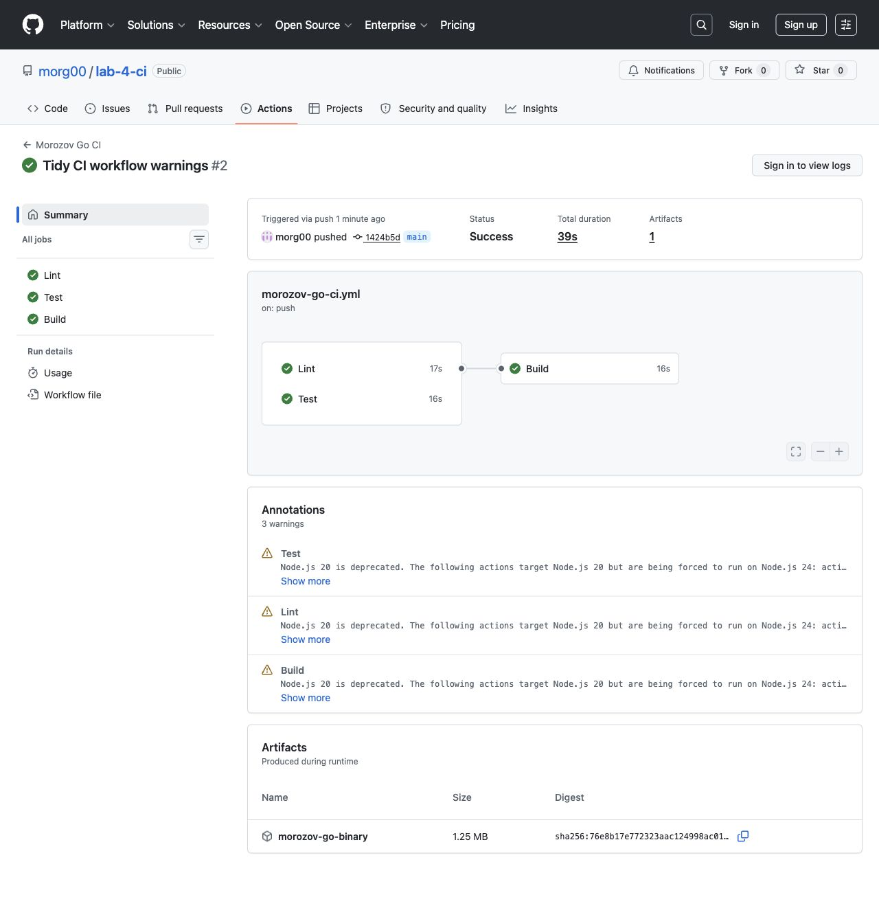

5. GitHub Actions
Репозиторий успешно создан на GitHub.

Во вкладке Actions видны запуски двух workflow.

Workflow Морозова завершился успешно: этапы Lint, Test и Build имеют статус Success.

Студент: Морозов А.Д.
Вариант: 13
Стек: Go, go vet, go test, go build.
Репозиторий: https://github.com/morg00/lab-4-ci
morozov-variant-13/ ├── go.mod ├── main.go ├── mathutils.go └── mathutils_test.go
Проект не имел готовой CI-конфигурации до добавления workflow. В корне репозитория создан файл .github/workflows/morozov-go-ci.yml.
В файле mathutils.go реализованы функции:
Add(a, b int) Max(values []int) Reverse(text string) IsEven(value int) RuneCount(text string)
Тестами go test покрыты минимум три функции, фактически проверены все пять.
Так как Go локально на компьютере не установлен, проверка выполнена через Docker-образ golang:1.23-alpine:
docker run --rm \ -v "/Users/alex/Лаба 4/lab-4-ci/morozov-variant-13:/src" \ -w /src \ golang:1.23-alpine \ sh -c 'go vet ./... && go test ./... -cover && go build -o /tmp/morozov-variant-13 .'
Результат: go vet прошел, тесты прошли, coverage 86.7%, сборка бинарника прошла.
Workflow запускается при push и pull request в ветку main, если изменился Go-проект или сам workflow.
on:
push:
branches:
- main
paths:
- "morozov-variant-13/**"
- ".github/workflows/morozov-go-ci.yml"
Pipeline содержит три обязательных этапа:
Lint -> go vet ./... Test -> go test ./... -cover Build -> go build
Репозиторий успешно создан на GitHub.
Во вкладке Actions видны запуски двух workflow.
Workflow Морозова завершился успешно: этапы Lint, Test и Build имеют статус Success.

git clone https://github.com/morg00/lab-4-ci.git cd lab-4-ci/morozov-variant-13 go vet ./... go test ./... -cover go build .